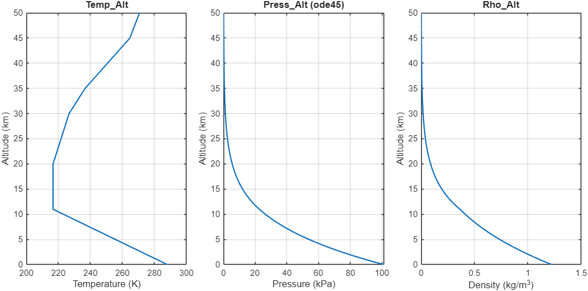
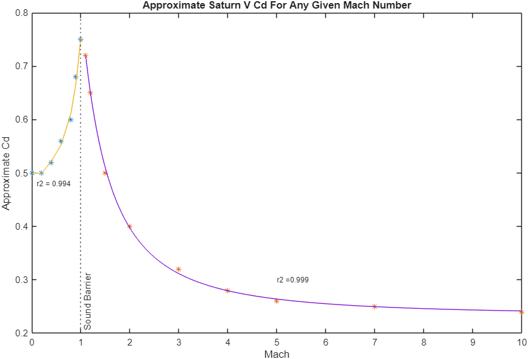

Personal project · MATLAB
Standard Atmosphere → Saturn V Drag
A set of MATLAB functions that build on each other: temperature gives pressure, pressure and temperature give density, and density combined with a Mach-dependent drag coefficient gives drag force at any altitude.
ode45Curve fittingRegressionDrag step in progress
How the pieces connect
Temp_Alt(h)Piecewise-linear temperature from 0 to 50 km, one linear segment per atmospheric layer.
Press_Alt(h)Integrates the hydrostatic equation dP/dh = −Pg/(RT) with
ode45from 101,325 Pa at sea level, usingTemp_Altinside the ODE. The solution is solved once, cached and interpolated.Rho_Alt(h)Ideal-gas density, ρ = P/(RT).
StdAtm(h)returns temperature, pressure and density together.Cd_Mach(M)Drag coefficient from Mach number, using regressions fit to approximate Saturn V data.
Drag_Of_SaturnVDynamic pressure × Cd × reference area, plotted against Mach.
Atmosphere results

StdAtm.To check the ODE, I compared the model's pressure with standard-atmosphere table values:
| Altitude | Temp (K) | Pressure, model (Pa) | Pressure, table (Pa) | Error | Density (kg/m³) |
|---|---|---|---|---|---|
| 0 km | 288.15 | 101,325 | 101,325 | — | 1.2250 |
| 5 km | 255.65 | 54,014 | 54,020 | 0.01% | 0.7360 |
| 11 km | 216.65 | 22,626 | 22,632 | 0.03% | 0.3638 |
| 20 km | 216.65 | 5,475 | 5,474 | 0.02% | 0.0880 |
| 30 km | 226.65 | 1,172 | 1,180 | 0.64% | 0.0180 |
| 40 km | 250.65 | 278 | 287 | 3.05% | 0.0039 |
| 50 km | 270.65 | 76 | 79 | 4.13% | 0.0010 |
Below 30 km the model matches the table to within 0.65%. Above 30 km the error grows to about 4% at 50 km. My temperature segments there are coarser than the standard layers, which is the next thing to refine.
Drag coefficient vs. Mach

In progress: the final drag-force step. Next steps: fix the reference area (10.1 m is the diameter, so the radius is 5.05 m), and replace the simplified altitude-Mach pairing with a real ascent trajectory.
Code
Temp_Alt.m
function Temp = Temp_Alt(h)
% Temp_Alt(h): Gives temperature at any altitude (h) from 0m to 50000m
%
% h: Can be a scalar or vector (in meters)
%
% These temperature values are based off of the standard atmosphere model
%
% written by Michael Kenyon
% Initialize output
Temp = zeros(size(h));
% region 1: 0 <= h <= 11000
Temp((0 <= h) & (h <= 11000)) = ...
(-0.0065) .* h((0 <= h) & (h <= 11000)) + 288.15;
% region 2: 11000 < h <= 20000
Temp((11000 < h) & (h <= 20000)) = 216.65;
% region 3: 20000 < h <= 30000
Temp((20000 < h) & (h <= 30000)) = ...
(0.0010) .* h((20000 < h) & (h <= 30000)) + 196.65;
% region 4: 30000 < h <= 35000
Temp((30000 < h) & (h <= 35000)) = ...
(0.0020) .* h((30000 < h) & (h <= 35000)) + 166.65;
% region 5: 35000 < h <= 45000
Temp((35000 < h) & (h <= 45000)) = ...
(0.0028) .* h((35000 < h) & (h <= 45000)) + 138.65;
% region 6: 45000 < h <= 50000
Temp((45000 < h) & (h <= 50000)) = ...
(0.0012) .* h((45000 < h) & (h <= 50000)) + 210.65;
endPress_Alt.m
% Press_Alt
% Pressure at any height
% Michael Kenyon
% Made with ODE and Interpolation, not with curve fitting.
function Press = Press_Alt(h)
persistent P_fun
if isempty(P_fun)
% Constants
g = 9.80665;
R = 287.05;
% Temperature function
T = @(h) Temp_Alt(h);
% Differential equation
dPdh = @(h,P) -(P*g)/(R*T(h));
% Solve once
h_envelope = [0 50000]; % in meters
P0 = 101325; % Pa at sea level
[h_sol, P_sol] = ode45(dPdh, h_envelope, P0);
% Create interpolation function
P_fun = @(h_query) interp1(h_sol, P_sol, h_query, 'pchip');
end
% Return pressure at requested altitude
Press = P_fun(h);
endRho_Alt.m and StdAtm.m
% Rho_Alt
% Density at any height
% Michael Kenyon
function Density = Rho_Alt(h)
R = 287.05; % J/(kg*K)
P = Press_Alt(h); % Pa
T = Temp_Alt(h); % K
Density = (P./T) .* (1/R); % kg/m^3
end
function [T, P, rho] = StdAtm(h)
T = Temp_Alt(h);
P = Press_Alt(h);
rho = Rho_Alt(h);
endCd_Mach.m
function Cd = Cd_Mach(M)
% Cd_Mach(M): Gives coefficient of drag of a rocket as a function of mach
% value (M)
% M: Can be a scalar of vector
% These Cd numbers are provided through air tunnel testing and using
% regression I created an equation set to determine Cd at ANY mach value
% written by Michael Kenyon
% Initialize output
Cd = zeros(size(M));
% Subsonic: M < 1
Cd(M < 1) = 0.8875 .* M(M < 1) .^ 4 - 1.3712 .* M(M < 1) .^ 3 + 0.8639 .* M(M < 1) .^ 2 - 0.1269 .* M(M < 1) + 0.5;
% Supersonic: M > 1
Cd(M > 1) = 0.5773 .* M(M > 1) .^ -1.814 + 0.2329;
% Exactly Mach 1
Cd(M == 1) = 0.75;
end